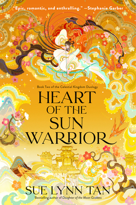

🔙 Back to All Books
- 
-
Heart of the Sun Warrior
Sue Lynn Tan
Book Description
The stunning sequel to Daughter of the Moon Goddess delves deeper into beloved Chinese mythology, concluding the epic story of Xingyin--the daughter of Chang'e and the mortal archer, Houyi--as she battles a grave new threat to the realm, in this powerful tale of love, sacrifice, and hope.
After her perilous quest to free her mother, Xingyin thrives once more in the tranquility of her home. But her fragile peace is threatened by the discovery of a strange magic on the moon and the unsettling changes in the Celestial Kingdom as the emperor tightens his grip on power. While Xingyin is determined to keep clear of the rising danger, the discovery of a shocking truth spurs her into a treacherous confrontation.
Forced to flee her home once more, Xingyin and her companions venture to unexplored lands of the Immortal Realm, encountering legendary creatures and shrewd monarchs, beloved friends and bitter adversaries. With alliances shifting quicker than the tides, Xingyin has to overcome past grudges and enmities to forge a new path forward, seeking aid where she never imagined she would. As an unspeakable terror sweeps across the realm, Xingyin must uncover the truth of her heart and claw her way through devastation--to rise against this evil before it destroys everything she holds dear, and the worlds she has grown to love... even if doing so demands the greatest price of all.
Genres
Fantasy | Young Adult | Romance | Retellings | Fiction | Mythology
About the Author
Sue Lynn Tan is the author of Daughter of the Moon Goddess and Heart of the Sun Warrior. Her books will be translated into seventeen languages, and are USA Today and Sunday Times bestsellers.
Born in Malaysia, Sue Lynn studied in London and France, before moving to Hong Kong with her family. Her love for stories began with a gift from her father, her first compilation of fairytales from around the world. After devouring every fable she could find in the library, she discovered fantasy books, spending much of her childhood lost in magical worlds.